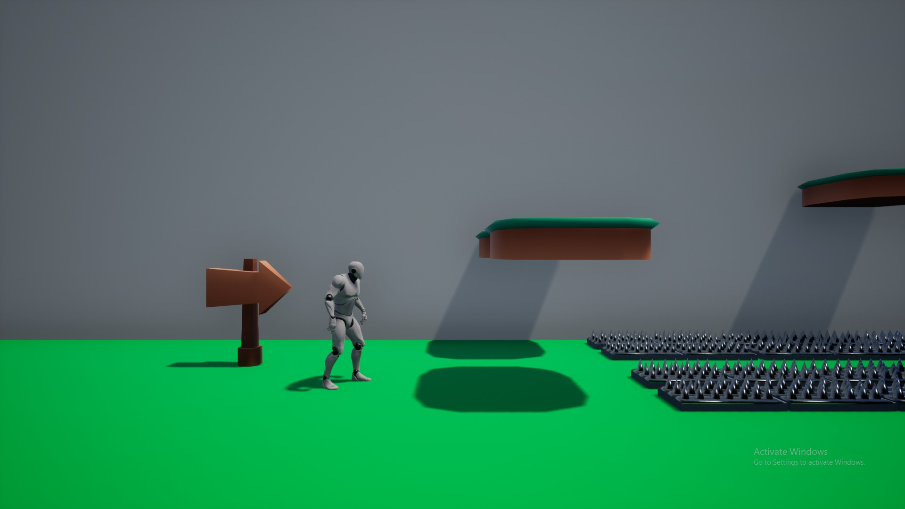
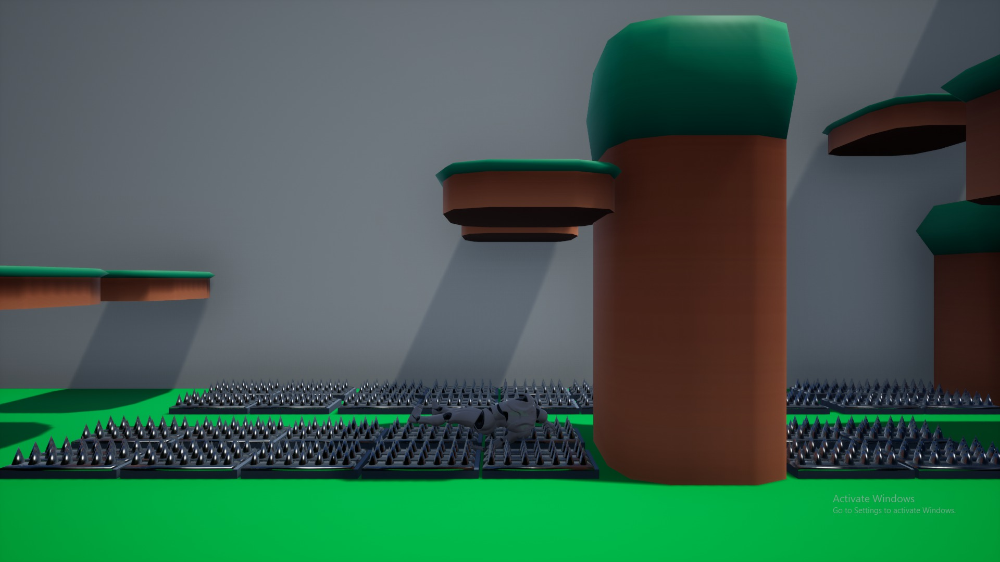
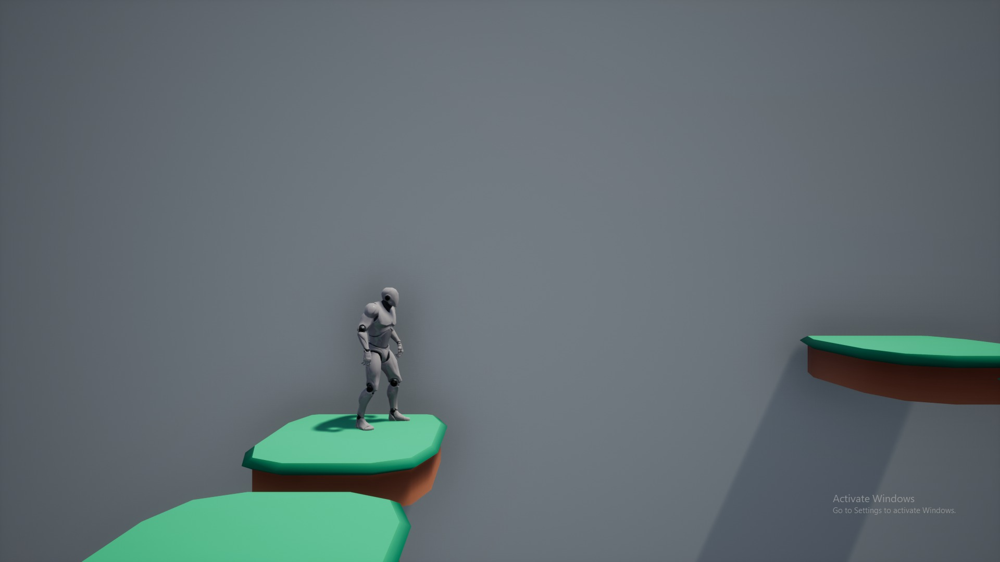
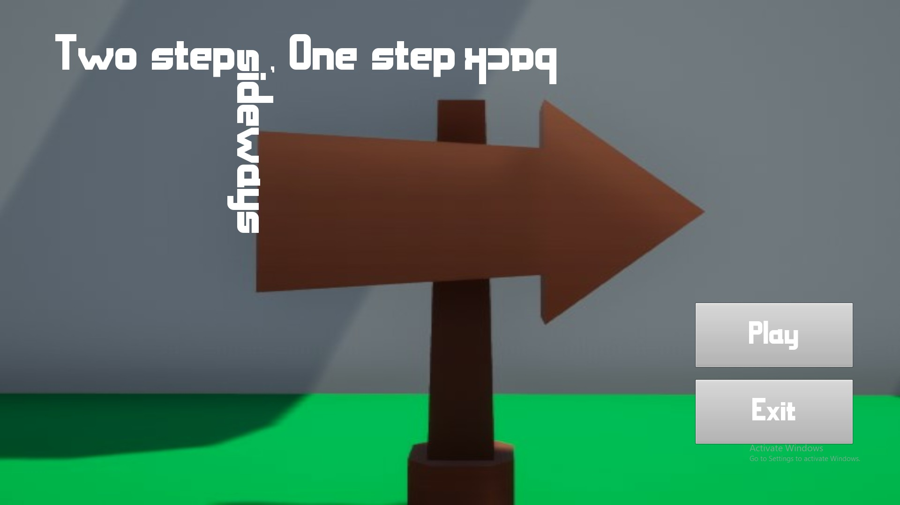
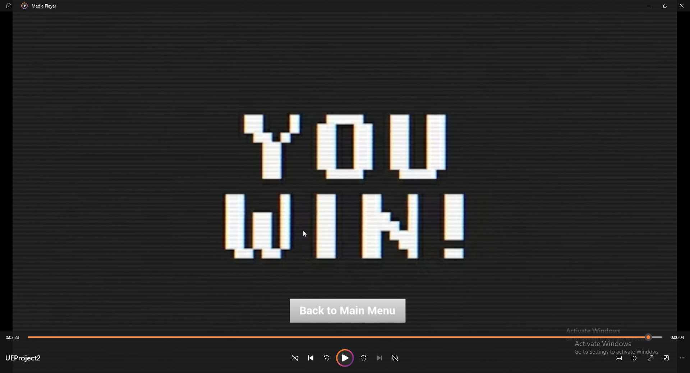

Experience
A 2.5D puzzle platformer in which intentional death and unusual checkpoint collisions become tools for reaching places that normal movement cannot.

Description
The character moves left and right with A and D and jumps with Space. The level is viewed from the side, but the puzzle structure goes beyond ordinary platform traversal: checkpoints, buttons, and collision behavior can be used to change where the player is able to go.
Some situations require the player to fail deliberately or interact with a checkpoint in an unusual way. Doing so can expose another layer behind the visible level, allowing a route to the exit. The documented game contains two designed levels and shows both in-level play and completion screens.

Detailed features
Side-view traversal
Horizontal movement and jumping provide the familiar platforming foundation. Platform placement and the position of checkpoints or buttons establish the visible route through each level.

Intentional death as a puzzle action
Death can be used to reach a checkpoint or trigger a situation needed for progress. The player must reason about the result of an attempt rather than treating every failed jump as something to avoid.

Alternative collision routes
Checkpoint and collision behavior can allow movement behind the normal layer of the level. Discovering and using that second route is part of solving the puzzle and reaching the end.

Build summary
The source documentation identifies a two-level, 2.5D platform game with movement, jumping, checkpoints, buttons, collision-dependent routes, and finish states. The project’s own gameplay and level screenshots are used as evidence of those interactions.
- Technology
- Unreal Engine
- Scope
- Unreal project
- Presentation
- 1080p footage unavailable

Feature video
1080p project video unavailable
A verified recording of this project at the requested resolution has not been published.